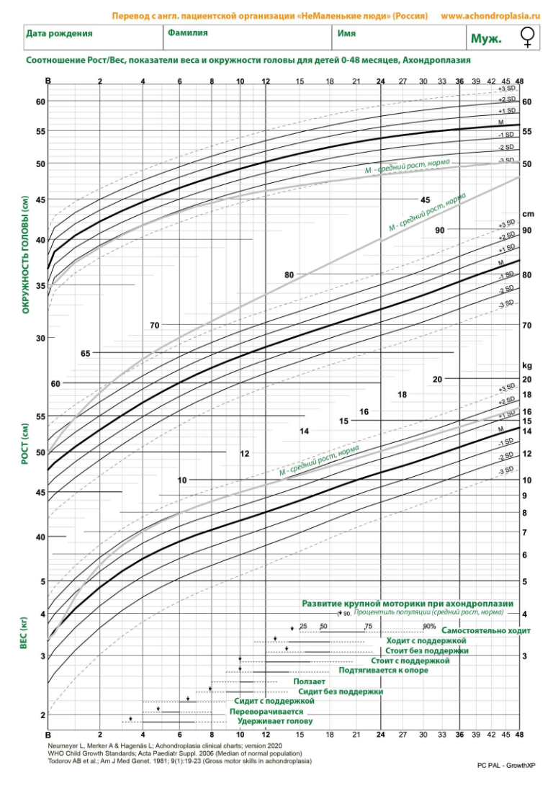

График роста, веса и окружности головы
Интерактивное нанесение пользовательских измерений на референсный график 0-48 месяцев.
Инструмент предназначен для визуализации данных и не заменяет консультацию врача. Интерпретацию графиков должен выполнять медицинский специалист.
